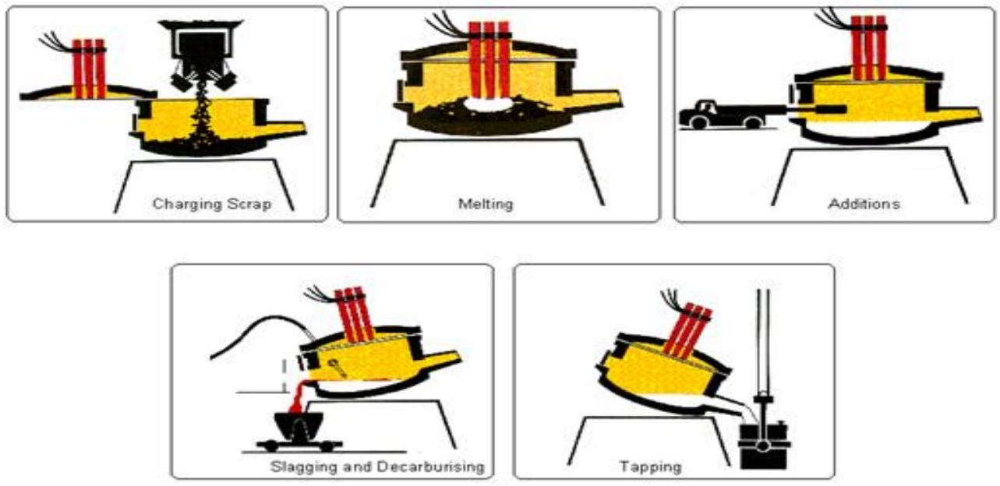

TOPIC 2: MATERIALS AND PROCESSES.
2.1 Metals and non-metals.
a. Metals:
Metals are opaque, lustrous elements that are good conductors of heat and electricity. Most metals are malleable and ductile and are, in general, denser than the other elemental substances.
b. Non-metals:
A non-metal is an element that is generally a poor conductor of heat and electricity. Most properties of nonmetals are the opposite of metals.
c. Alloys.
An alloy is a mixture composed of two or more elements, at least one of which is a metal.
Examples of common alloys:
- Steel: A combination of iron (metal) and carbon (non-metal)
- Bronze: A combination of copper (metal) and tin (metal)
- Brass: A mixture of copper (metal) and zinc (metal)
d. Ferrous and non-ferrous metals.
Ferrous metals contain iron and non-ferrous metals do not contain iron.
Which Metals Are Ferrous?
Some common ferrous metals include alloy steel, carbon steel, cast iron and wrought iron. These metals are prized for their tensile strength and durability. Carbon Steel - also known as structure steel - is a staple in the construction industry and is used in the tallest skyscrapers and longest bridges. Ferrous metals are also used in shipping containers, industrial piping, automobiles, railroad tracks, and many commercial and domestic tools.
Ferrous metals have a high carbon content which generally makes them vulnerable to rust when exposed to moisture. There are two exceptions to this rule: wrought iron resists rust due to its purity and stainless steel is protected from rust by the presence of chromium.
Most ferrous metals are magnetic which makes them very useful for motor and electrical applications.
Steel:
Steel is made by adding iron to carbon which hardens the iron. Alloy steel becomes even tougher as other elements like chromium and nickel are introduced. Steel is made by heating and melting iron ore in furnaces. The steel can is tapped from the furnaces and poured into molds to form steel bars. Steel is widely used in the construction and manufacturing industries.
Carbon Steel:
Carbon steel has a higher carbon content in comparison to other types of steel making it exceptionally hard. It is commonly used in the manufacturing of machine tools, drills, blades, taps, and springs. It can keep a sharp cutting edge.
Alloy Steel:
Alloy steels incorporate elements such as chromium, nickel and titanium to impart greater strength and durability without increasing weight. Stainless steel is an important alloy steel made using chromium. Alloy steels are used in construction, machine tools, and electrical components.
Cast Iron:
Cast iron is an alloy made from iron, carbon, and silicon. Cast iron is brittle and hard and resistant to wear. It's used in water pipes, machine tools, automobile engines and stoves.
Wrought Iron:
Wrought iron is an alloy with so little carbon content it's almost pure iron. During the manufacturing process, some slag is added which gives wrought iron excellent resistance to corrosion and oxidation, however, it is low in hardness and fatigue strength. Wrought iron is used for fencing and railings, agricultural implements, nails, barbed wire, chains, and various ornaments.
Which Metals Are Non-Ferrous?
Non-ferrous metals include aluminum, copper, lead, zinc, and tin, as well as precious metals like gold and silver. Their main advantage over ferrous materials is their malleability. They also have no iron content, giving them a higher resistance to rust and corrosion, and making them ideal for gutters, liquid pipes, roofing, and outdoor signs. Lastly, they are non-magnetic, which is important for many electronic and wiring applications.
Aluminum:
Aluminum is lightweight, soft, and low strength. Aluminum is easily cast, forged, machined, and welded. It's not suitable for high-temperature environments. Because aluminum is lightweight, it is a good choice for the manufacturing of aircraft and food cans. Aluminum is also used in castings, pistons, railways, cars, and kitchen utensils.
Copper:
Copper is red in color, highly ductile, malleable and has high conductivity for electricity and heat. Copper is principally used in the electrical industry in the form of wire and other conductors. It's also used in sheet roofing, cartridge cases, statutes, and bearings. Copper is also used to make brass, an alloy of copper and zinc.
Lead:
Lead is a soft, heavy, malleable metal with a low melting point and low tensile strength. It can withstand corrosion from moisture and many acids. Lead is widely used in electrical power cables, batteries, building construction and soldering.
Zinc:
Zinc is a medium to low strength metal with a very low melting point. It can be machined easily, but heating may be required to avoid cleavage of crystals. Zinc is most widely used in galvanizing, the process of applying a protective zinc coating to iron or steel to prevent rust.
Tin:
Tin is very soft and malleable, ductile with low tensile strength. It's often used to coat steel to prevent corrosion. Tinplate steel is used to make tin cans to hold food. In the late 19th century, tin foil was commonly used to wrap food products, but has since largely been replaced by aluminum foil. Tin can also be alloyed with copper to produce tin brass and bronze.
2.2 Properties of materials.
Physical properties are measurable. Those are things like density, melting point, conductivity, coefficient of expansion, etc. Mechanical properties are how the metal performs when different forces are applied to them. That includes things like strength, ductility, wear resistance, etc. The mechanical and physical properties of materials are determined by their chemical composition and their internal structure, like grain size or crystal structure.
a. Conductivity:
Thermal conductivity is a measure of the quantity of heat that flows through a material.
b. Corrosion Resistance:
Corrosion resistance describes a material's ability to prevent natural chemical or electrochemical attack by atmosphere, moisture or other agents.
c. Density:
Density, often expressed as pounds per cubic inch, or grams per cubic centimeter, etc., describes the mass of the alloy per unit volume. The density of the alloy will determine how much a component of a certain size will weigh.
d. Ductility:
Ductility is the ability of a material to deform plastically (that is, stretch) without fracturing and retain the new shape when the load is removed. Think of it as the ability to stretch a given metal into a wire. (Tensile stress)
e. Malleability:
A physical property describes a metal's ability to be formed without breaking. Pressure, or compressive stress, is used to press or roll the material into thinner sheets. A material with high malleability will be able to withstand higher pressure without breaking. (Compressive stress)
f. Elasticity:
Elasticity describes a material's tendency to return to its original size and shape when a distorting force is removed. As opposed to materials that exhibit plasticity (where the change in shape is not reversible), an elastic material will return to its previous configuration when the stress is removed.
The stiffness of a metal is the ability of an object to resist deformation in response to an applied force; rigidity; complementary to flexibility
g. Toughness:
It is the ability of a material to absorb the energy and gets plastically deformed without fracturing.
h. Hardness:
Hardness is defined as a material's ability to resist permanent indentation (that is plastic deformation). Typically, the harder the material, the better it resists wear or deformation. The term hardness, thus, also refers to local surface stiffness of a material or its resistance to scratching, abrasion, or cutting.
i. Plasticity:
Plasticity, the converse of elasticity, describes the tendency of a certain solid material to hold its new shape when subjected to forming forces. It is the quality that allows materials to be bent or worked into a permanent new shape. Materials transition from elastic behavior to plastic at the yield point.
j. Strength:
It is the property of a material which opposes the deformation or breakdown of material in presence of external forces or load.
k. Tensile Strength:
Tensile strength refers to the amount of load a section of metal can withstand before it breaks.
l. Toughness:
Toughness represents a material's ability to absorb impact without fracturing at a given temperature.
m. Wear Resistance:
Wear resistance is a measure of a material's ability to withstand the effect of two materials rubbing against each other. This can take many forms including adhesion, abrasion, scratching, gouging, galling, and others.
n. Brittleness:
Brittleness of a material indicates that how easily it gets fractured when it is subjected to a force or load. When a brittle material is subjected to a stress it observes very less energy and gets fractures without significant strain. Brittleness is converse to ductility of material. Brittleness of material is temperature dependent. Some metals which are ductile at normal temperature become brittle at low temperature.
2.3 Extraction Process.
a. Extraction of Iron.

The blast furnace.
Iron is extracted from iron ore in a huge container called a blast furnace. Iron ores such as haematite contain iron(III) oxide, $\mathrm{Fe}_{2} \mathrm{O}_{3}$.
The oxygen must be removed from the iron(III) oxide to leave the iron behind. Reactions in which oxygen is removed are called reduction reactions.
Carbon is more reactive than iron, so it can displace iron from iron(III) oxide. Here are the equations for the reaction:
Iron(III) oxide + carbon $\rightarrow$ iron + carbon dioxide
In this reaction, the iron(III) oxide is reduced to iron, and the carbon is oxidised to carbon dioxide. In the blast furnace, it is so hot that carbon monoxide can be used, in place of carbon, to reduce the iron(III) oxide:
iron(III) oxide + carbon monoxide $\rightarrow$ iron + carbon dioxide
The calcium carbonate in the limestone thermally decomposes to form calcium oxide.
calcium carbonate $\rightarrow$ calcium oxide + carbon dioxide
The calcium oxide then reacts with silica (sand) impurities in the haematite, to produce slag which is calcium silicate.
calcium oxide + silica $\rightarrow$ calcium silicate
Raw materials for the reaction
| Raw material | Contains | Function |
|---|---|---|
| Iron ore (haematite) | Iron(III) oxide | A compound that contains iron |
| Coke | Carbon | Burns in air to produce heat, and reacts to form carbon monoxide (needed to reduce the iron oxide) |
| Limestone | Calcium carbonate | Helps to remove acidic impurities from the iron by reacting with them to form molten slag |
| Air | Oxygen | Allows the coke to burn, and so produces heat |
In summary:
The blast furnace operates at $1900^{\circ} \mathrm{C}$ in order to smelt iron from iron ore. To attain that temperature, coke (and not coal) is used as fuel, and the fire inside the furnace is fanned with hot air at $1200^{\circ} \mathrm{C}$ to $1300^{\circ} \mathrm{C}$ degrees. Lime is added as an additional component; it binds contaminants. The blast furnace is fed from the top, so that alternating layers of coke and iron ore are formed. The highest temperature occurs in the lower part of the furnace. The liquid iron, on which the slag floats, collects at the base.
b. Extraction of steel.
The basic raw material for steel manufacture is either the hot metal from the blast furnace, steel scrap or a mixture of both. The proportions of material used vary according to the process and the type of steel required. Steel can be described in general terms as iron with most of the carbon removed, to make it tougher and more ductile. There are many forms (grades) of steel, each with its own specific chemical composition and properties to meet the needs of the many different applications.
Electric arc furnace method of making steel:
The electric arc furnace consists of a circular bath with a movable roof, through which three graphite electrodes can be raised or lowered. At the start of the process, the electrodes are withdrawn, and the roof swung clear. The steel scrap is then charged into the furnace from a large steel basket lowered from an overhead travelling crane. When charging is complete, the roof is swung back into position and the electrodes lowered into the furnace. A powerful electric current is passed through the charge, an arc is created, and the heat generated melts the scrap. Lime and fluorspar are added as fluxes and oxygen is blown into the melt. As a result, impurities in the metal combine to form a liquid slag.
c. Extraction of aluminium.
Aluminium is the most abundant metal on Earth, but it is expensive, largely because of the amount of electricity used in the extraction process.topic-3.html
Precautions of Using Chisel
Following are the precautions of Using Chisel
- At the time of chipping, we must always use safety goggles.
- Keep your face towards the wall, while chipping.
- If someone is working in your front, you should fix chipping guard at the rear of the vice so that chips do not hit him.
- The mushroom head chisel should never be used for chipping.
- There should not be any greasy substance on the chisel head and face of the hammer being used for chipping.
- An extraordinarily long chisel should not be used for chipping.
- While chipping we should keep on applying grease on the edge of the chisel.
3.3.6 Snips
Snips are made in various shapes and sizes for various tasks. The handle can be like those on scissors with finger and thumb holes or like plier handles. Models are available for cutting in straight lines, in curves to the left or curves to the right.
Universal snips can cut in both straight and wide curves.
Straight snips and duckbill snips (flat blade, "perpendicular" to the handle, with pointed tips) are designed to cut in straight lines; some duckbill snips are designed for cutting curved lines.
Hawk's bill snips (with crescent-shaped jaws) are used for cutting tight circles.
Aviation snips have compound leverage that reduces the effort required for cutting.
Offset snips have jaws that are set at an angle from the handle.
DO:
- Select the right size and type of snips for the job; check the manufacturer's specifications about the intended use of the snips (e.g., type of cut - straight, wide curve, tight curve, right or left, and maximum thickness and kind of metal or other material that can be cut).
- Only use snips that are sharp and in good condition.
- Wear safety glasses or goggles, or a face shield (with safety glasses or goggles) and protective gloves when working with snips. Small pieces of metal may go flying in the air and the cut edges of metal are sharp.
Left cut snips are for making cuts to the left and straight cuts.
Right cut snips are for making straight cuts and cuts to the right.
Straight cut snips (not shown) are for making straight cuts and shallow cuts to the right or left.

Offset snips permit you to keep your hands safely above the cut while cutting directly through the centre of a large sheet.
Precautions when using snips.
- Use snips for cutting soft metal only. Hard or hardened metal should be cut with cutting tools designed for that purpose.
- Use ordinary hand pressure for cutting. If extra force is needed, use a larger tool.
- Cut so that the waste is on the right if you are right-handed or on the left if you are left-handed.
- Avoid springing the blades. This results from trying to cut metal that is too thick or heavy for the snips you are using.
- Keep the nut and the pivot bolt properly adjusted at all times.
- Oil the pivot bolt on the snips occasionally.
- Use the locking clip (if available) to keep the snips closed when not in use.
What should I avoid doing?
- Do not try to cut sharp curves with straight cut snips.
- Do not cut sheet metal thicker than the manufacturer's recommended upper limit (e.g., cuts up to 16 gauge cold rolled steel or 18 gauge stainless steel).
- Do not extend the length of handles to gain greater leverage.
- Do not hammer or use your foot to exert extra pressure on the cutting edges.
- Do not use cushion grip handles for tasks requiring insulated handles. They are for comfort primarily and not for protection against electric shocks.
- Do not attempt to resharpen snips in a sharpening device designed for scissors, garden tools or cutlery.
3.3.7 Taps and Dies
A tap is a threaded tool that cuts or forms threads in the female portion of a mating pair. Therefore, a tap will create threads in the inside of a hole. On the other hand, a die is a threaded tool that cuts or forms threads in the male portion of a mating pair. Therefore, a die will create threads on a cylindrical rods surface to create a screw or bolt. Both a tap and a die create new threads or repair damaged threads.
The Tap
Taps thread the inside surface of a hole to create components like nuts or holes (blind or through) to screw in a screw or bolt. There are three main types of taps. The plug, second, and taper (also known as bottoming, plug, and taper in the U.S.). The image below illustrates the three types:
How to use a tap
Prepare the hole:
- This is the first step of tapping. It is the formation of a hole, usually by drilling, to a diameter smaller than the taps outer diameter. This diameter is called the tap drill size.
- The drill bit to be used for the hole diameter is listed in the drill and tap chart, usually inside the tap and die set. It is also available in machine shops.
- Drill the hole, either a blind hole or through-hole.
- Ensure removal of all chips from the hole.
- Select tap and ratchet: Use the chart again to select the right tap size for your project. Remember, there are different types of taps. You may have to start with a tapered tap before finishing with a plug tap.
- Depending on the tap size, use the appropriate ratchet. There are typically two sizes. Using the larger ratchet for a small tap may lead to an excessive force that can break the tap.
Create the threads (hand tap):
- Fasten down the material to be threaded with a vice or clamp.
- Insert the tap, ensure it is centered and aligned, and turn in the clockwise direction making two complete rotations. Then turn anticlockwise for half a cycle. Repeat this process until complete threading. This style of tapping prevents broken material from damaging the new threads.
- Apply cutting fluid throughout the process to reduce heat and transport chips
- Keep the material and tap centered and level.
- If you feel some restrictive force, turn anticlockwise for half a rotation and try again. Do not force the thread, or you risk breaking the tap or making incorrect threads.
- Remove the tap: Turn the ratchet anticlockwise until the tap is entirely out. The tapping process is complete.
The die
The Die.
Dies can thread a cylindrical materials outside surface, such as a rod, to make a bolt or screw. There are two general types of dies: the solid die and the adjustable die. A solid die cuts a nominal thread with a consistent depth. The accuracy is dependent on die precision and wear. The compression and release of the adjustable die is possible to achieve different classes of thread fit. Turning integrated screws adjust the die.
How to use a die?
The process of threading with a die involves several steps that will be described below:
- Prepare the rod: The material diameter should be slightly smaller than the dies major diameter. The die has a chamfered side used as the entry side for the rod. The chamfer helps to center the die on the rod and reduces the start turning force when threading.
- Select die and wrench: Like the tapping process, use the chart to select the right die with an appropriately sized wrench.
- Create the threads; Fasten down the material with a vice or clamp.
- Place the die on the material with the chamfered side starting the threads. Center the die and align it, turn in the clockwise direction making two complete rotations.
- Then turn anticlockwise for half a cycle. Repeat this process until the complete threading. Use cutting fluid as required.
- Remove the die. Turn the wrench anticlockwise until the die is entirely out. The threading process is complete.
Selection criteria for tap and die sets
There are several things to consider when choosing the right tap and die set to use. Here are the important ones:
- Material: High-speed steel is more expensive than hardened carbon steel but is more robust and suitable for more material.
- The number and range of pieces: Check that the set sizes are within your desired range of needed threads to cut.
- Additional tools: Some sets come with additional tools and charts that can be useful.
- Is the part corrosion resistant?
- Check the application/material capabilities of the set listed in the manufacturers' product information.
- Check that the carrying case is durable. The case stores the pieces.
QUESTIONS.
-
a. Describe the following workshop hand tools and state one application of each
- Chisel
- Snips
- Scriber
- Engineer's square
- Taps
- a. Explain the difference between linear scale and non-linear scale b. i. State the functions of a divider ii. Draw a labelled diagram of a spring divider c. i. Draw a micrometer screw gauge reading $8.90 \mathrm{~mm}$ ii. Outline the procedure of reading the $8.90 \mathrm{~mm}$ on the scale in c(i) (7 marks) d. state three safety precautions observed in care of scribers
-
a. Draw a vernier scale to show a reading of $10.02 \mathrm{~cm}$
b. List three:
- cutting tools
- marking out tools
- a. State THREE reasons for marking out a piece of metal before cutting and filing b. Define the term tolerance as used in measurements c. i. Sketch and label a micrometer screw gauge. ii. State TWO functions of a micrometer screw gauge
-
State three:
- Categories of fits
- Functions of a steel rule
-
Outline:
- TWO factors considered when selecting a hacksaw blade
- THREE safety precautions observed when cutting a work piece using a hacksaw